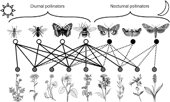

In abstract representations of ecological communities as networks, nodes represent species and links amongst them denote ecological interactions happening between the represented species.
Adjacency matrices (as we saw in the previous section) are matrix representations of networks where elements of the matrix denote the presence of a link (i.e. interaction) between the species represented by the row and the species represented by the column. Thus, to represent a food web composed of S species as a matrix we need a SxS matrix in order to be able to represent all possible interaction between the S species. The number of species in the network can be calcuated thus as the number of rows or the number of columns.
Using the Benguela food web adjacency matrix benguela.AM that you created in the previous section, you can calculate the number of species.
In an adjacency matrix, all species are represented by columns and rows. Counting the number of columns or rows in the adjacency matrix will let you obtain the number of species in the food web. In R, you can use the dim function to look at the matrix dimensions.
# species richness
S <- dim(benguela.AM)[1]Similarly, since interactions are represented as ones in the matrix, if you sum all the values in the matrix, you will get the number of interactions.
# number of links
L <- sum(benguela.AM)Food webs, like that for the Benguela ecosystem studied above, are network representation of who eats whom relationships in an ecological community. As such, there are no distinct subset of species among which interactions are not possible. This is why adjacency matrices for representing food webs contain the total number of species as rows and also as columns. In theory, any interaction is possible.
Other types of ecological networks, however, like for example, plant-animal mutualistic networks (Figure 1) or host-parasite interaction networks, exhibit a bipartite structure. In this type of networks, species can be classified into two distinct groups where interactions do not occur (or are forbidden) among members of the same group. For example, in a plant-animal mutualistic network, plants do not interact with plants and animal mutualists do not interact among them. This feature allows for a more concise matrix representation of bipartite networks.

Figure 1. Example of a plant-animal pollinator bipartite network. Image taken from MacGregor, CJ et al. (2015) Pollination by nocturnal Lepidoptera, and the effects of light pollution, a review. Ecological Entomology. 40, 187-198.
The equivalent of an adjacency matrix for a bipartite network is termed an incidence matrix. In incidence matrices one set of species are represented as rows (e.g. hosts/plants), and the other set of species as columns (e.g. visitors/mutualists). Thus, the way of counting species in an incidence matrix representing a mutualistic (bipartite) network is different from that used to count species in adjacency matrices representing food webs.
For a bipartite ecological network represented by an incidence matrix with size HxV, where H is the number of hosts and V is the number of visitors, the number of species in the network is equal to H + V.
As an example, we load a matrix representing a bipartite network of interactions between anemones and several species of fish living within them in South-East Asia. This network was taken from Ollerton, J. et al. (2007) Finding NEMO: nestedness engendered by mutualistic organization in anemonefish and their hosts. Proceedings of the Royal Society B. 274, 591-598.
Try and calculate the total number of anemone and fish species in the network. Remember that in a bipartite network, one set of species (in this case, anemones) are represented as columns, while the other set (in this case, fishes) are represented as rows.
library(RCurl)
y <- getURL("https://raw.githubusercontent.com/seblun/networks_datacamp/master/datasets/anemonefish.txt")
anemonef <- read.table(text = y)
names(anemonef) <- paste("A", 1:10, sep = "")
row.names(anemonef) <- paste("F", 1:26, sep = "")
anemonef <- as.matrix(anemonef)
### The number of fish species in the network is the number of rows
n_fish <- dim(anemonef)[1]
### The number of anemone species is the number of columns
n_anemone <- dim(anemonef)[2]
### So, the total number of species is the sum of these two quantities
S <- n_fish + n_anemone
### Whereas the total number of interactions is still the sum of the matrix
L <- sum(anemonef)